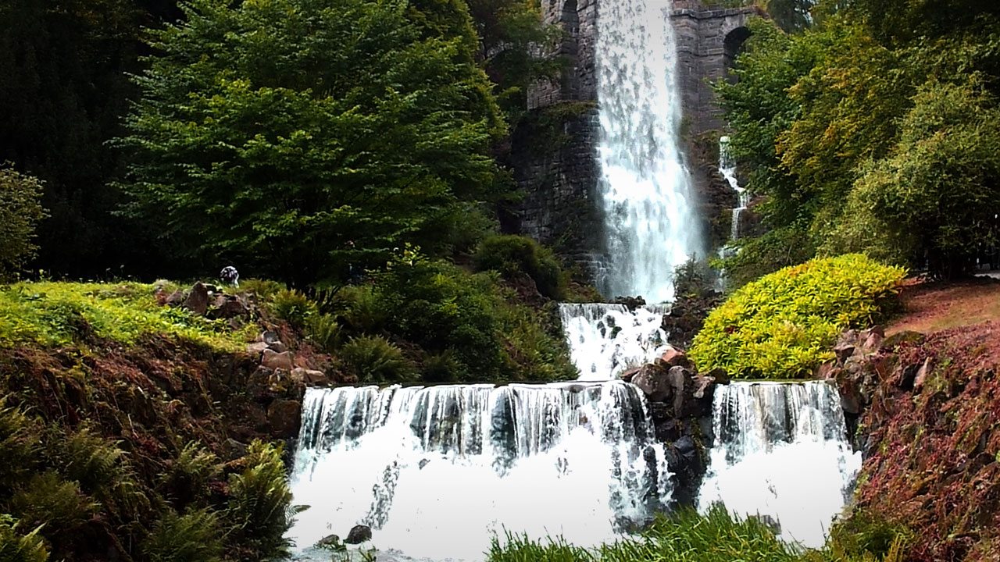

Muzica surzilor
Trei studii de compoziție în absența pianului

Partituri și înregistrări
Înregistrare
Rezumat
Muzica surzilor este o piesă pentru pian născută dintr-un experiment componistic neobișnuit: scrierea muzicii fără acces la vreun instrument. Alcătuită din trei secțiuni scurte, lucrarea încearcă să afle în ce măsură forma, sintaxa și procedeele dezvoltătoare pot suplini intuiția sonoră directă — cu rezultate surprinzător de expresive, în ciuda acestei privări deliberate.
Fișă tehnică
| Orchestrație | Pian |
|---|---|
| Text | — |
| Durată | 5′ |
| Stare | Finalizată |
| Finalizat | 2012 |
| Premieră | — |
| Interpretat de | — |
| Distincții | — |
| Copyright | Claudius Iacob |
Note de program
Muzica surzilor își datorează existența (și titlul bizar) unui experiment – experiment pentru mine, uzanță pentru mulți compozitori: mi-am propus să compun muzică fără acces la un instrument muzical, și am făcut-o la modul cel mai responsabil.
Pentru acei câțiva binecuvântați, capabili să audă fără greș o partitură, în întreaga ei complexitate, doar la o privire asupra notelor, un asemenea demers este lipsit de revelații. Pentru mine însă, cele câteva după-amiezi de scris muzică într-un parc bucureștean au fost pline de descoperiri.
Privat de contactul empiric cu înălțimile, și separat de cel mai competent judecător de muzică, auzul, am fost nevoit să acord o atenție capitală acelor elemente meta-muzicale, a căror bună gestiune înlesnește de obicei percepția unei opere muzicale ca atare: forma (construcția arhitecturală a piesei), tectonica (alternanța, ritmul și raporturile dintre văile și crestele unei melodii), sintaxa (exprimarea muzicii ca monodie, omofonie, polifonie), și evoluția de dinamică, tempo și tensiuni armonice (unde, în lipsa pianului, ierarhizarea teoretică făcută de Hindemith a fost de mare ajutor). Într-o nouă lumină am fost nevoit să văd și spinoasa chestiune a dezvoltării materialului muzical, forțat fiind să mă descurc cu procedee mecanice, operabile și controlabile exclusiv vizual: augmentări / diminuări de intervale și durate muzicale, adăugiri, eliziuni, transpoziții, și mai ales repetiții.
Ultimul procedeu, mai ales, stă la baza primei piese. Labirint este un ghem îmbârligat de motive, ce-și creează pregnanța și raporturile de antecedență / consecvență aproape exclusiv prin repetiții. Tenta umoristică este asigurată de sistemul stufos de bare de repetiții imbricate, garant al multor interpretări total diferite ale aceleiași muzici.
Opriri este o muzică seacă în material tematic, dar care devine plauzibilă mulțumită tempo-ului rapid (și șuvoiului implicit de sunete) și unui contrast radical de stări, obținut prin numeroasele fermate, marcate foarte explicit și sonor.
Coral este chiar ceea ce declară în titlu: cu un discurs armonic organizat tripartit, și secțiunea mediană oferind unele rudimente de polifonie. Muzica se justifică printr-un ritm armonic ostentativ, o formă foarte clar articulată, și trăiește dintr-o austeritate frustă, pe care o expune consecvent și fără menajamente.